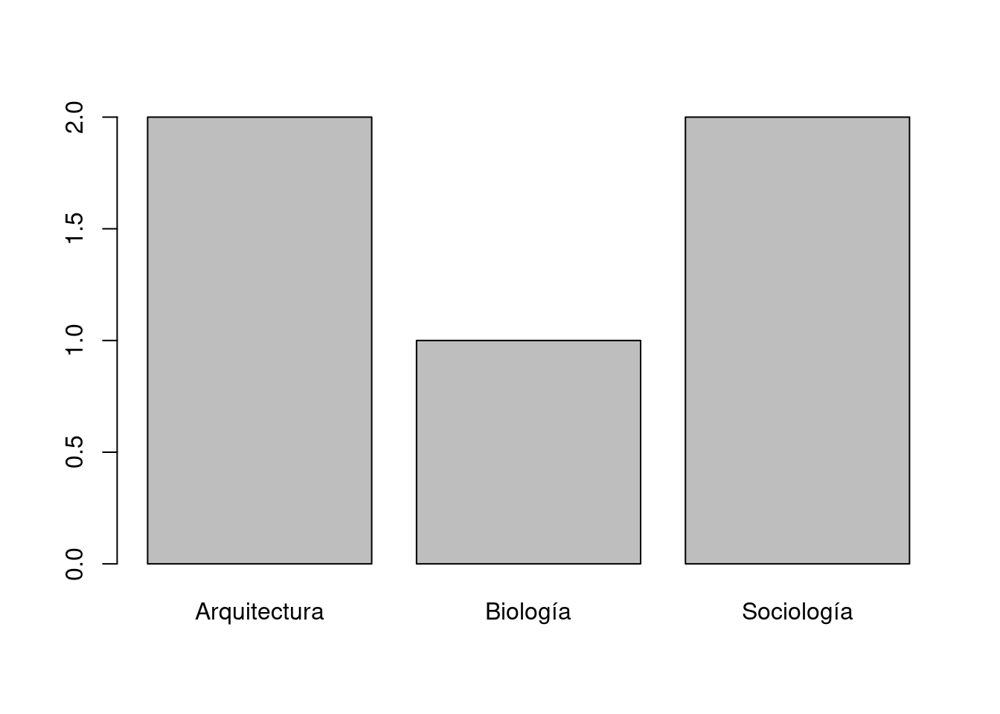

Capítulo 1 Primeros pasos en R
Con R y Rstudio instalados estamos podemos empezar a interactuar con R, es decir, a pasar instrucciones escritas con R al intérprete de R.
1.1 Crear un proyecto.
Los proyectos son una manera de organizar el trabajo: reúnen todos los archivos que necesitamos y, como si fuera poco, permiten grabar una imagen de nuestra sesión en el disco rígido. De ese modo podemos cerrar el programa y guardar el entorno de trabajo completo, regresando más tarde al punto exacto en el que los habíamos dejado. En el entorno de trabajo de R se ubican los datos y los resultados de nuestros análisis. Para convertir a un archivo con datos en una estructura de datos de R debemos importarlo y para poder compartir nuestros resultados de análisis debemos exportarlos.
La mayoría de los programas de análisis de datos –incluyendo Excel, pero también SPSS y en menor medida Stata– utilizan al archivo como metáfora de los datos. Trabajamos sobre un archivo, o al menos eso parece: cargar los datos es abrir un archivo, manipularlos es modificar ese archivo, los resultados del análisis se guardan como un archivo. En lugar de la metáfora del archivo R utiliza la metáfora de los objetos. A diferencia de los objetos no se guardan en el disco rígido -entonces no podemos copiarlos desde el Explorador o Finder–, existen solamente en la memoria RAM y no necesariamente tienen un nombre.
Nuestro primer proyecto se llamará “tareas” y lo crearemos yendo al menú File->New Project y seleccionando después New Directory -> Empty Project. Finalmente introducimos el nombre que queremos dar al proyecto, que será también el nombre de la carpeta en la que estará. En este caso se llamará tareas. Podemos especificar en qué ubicación se creará esa carpeta. Recomiendo utilizar la carpeta DropBox para nuestros proyectos de R De ese modo no tendrá que preocuparse de hacer copias de seguridad.
1.2 Sintaxis de R: operadores y operandos.
La forma más directa de empezar a usar R es usarlo como una calculadora. R incluye los operadores aritméticos usuales: +,-,*,/,^. Dentro de R llamamos a este tipo de operadores operadores binarios: se ubican entre dos términos, uno a la izquierda y otro a la derecha. Esos dos términos son operando, los datos sobre los que se realizará la operación. Las reglas de operación matemáticas usuales aplican, 2-1 restará una unidad a 2, no a la inversa. Del mismo modo que utilizamos los operadores binarios podemos utilizar los paréntesis para separar términos y dar orden a la ejecución de una operación. El primer uso que haremos de los paréntesis es tanto sintáctico de R como matemático. Para calcular el área de un círculo usamos pi por radio al cuadrado. Entonces tenemos que elevar el radio del círculo en cuestión al cuadrado y luego multiplicarlo por pi, que simplificaremos como 3.1416. Ese es nuestro orden de ejecución. En R lo resolvemos ubicando entre paréntesis la operación que se resolverá primero. Por ejemplo:
#Calcular el área de un círculo de 5 cm de radio.
3.1416*(5^2) #Indicamos explícitamente el orden de las operaciones.## [1] 78.54## [1] 78.54## [1] 246.7413Pi es un número muy común en las matemáticas. Es conveniente tenerlo a mano y llamarlo de una manera más directa que capturarlo con el teclado cada vez que lo vamos a usar. R incluye una variable llamada pi, que cuando la invocamos nos regresa ese número. Como pi es una variable en el entorno la llamamos invocando su nombre sin comillas. Podemos hacer la operación anterior introduciendo la expresión pi para invocar a \(\pi\).
## [1] 3.141593## [1] 78.53982Lo mismo podemos hacer con el radio, sólo que como no es una variable de entorno debemos crearla nosotros y asignarle un valor. La combinación de caracteres <- (menor que seguido de guion medio) es el operador que R utiliza para asignar un nombre a un objeto. El objeto al que damos nombre es el output de una función y, a través del operador <-, los vinculamos con un nombre. Los objetos ‘bautizados’ pueden ser convocados más tarde llamándolos por su nombre y no desaparecerán del entorno de trabajo a menos que los eliminemos intencionalmente.
Nota para programadores de otros lenguajes: R utiliza tipos de datos débiles e inferencia de tipos. No es estrictamente necesario crear una estructura de datos, asignarle un tipo y luego un valor. Estas tres operaciones se hacen al mismo tiempo. Sólo recuerde que los tipos de datos de R siempre son mutables. Revise su código y verifique el tipo con frecuencia.
radio <- 5 #Crea el objeto radio y le asigna el valor 5.
typeof(radio) #R infirió que era numérico (double).## [1] "double"radio_cuadrado <- radio^2 #Crea el objeto radio cuadrado al que asigna el resultado de la operación radio^2
pi*radio_cuadrado #Multiplica pi por radio_cuadrado y nos muestra el resultado. No le asigna nombre. ## [1] 78.53982Es posible utilizar el signo = para hacer la misma operación, asignar nombres y es posible que se encuentre con código de R que lo utiliza. Sin embargo los manuales de estilo[^1^](#fn1){#fnref1 .footnoteRef} recomiendan usar <- por diversos motivos. El más importante es que podemos leerlo como una flecha que indica dónde quedará registrado el resultado. En radio <- 5 queda claro que radio tomará el valor 5, en esa dirección apunta la flecha. No hay ambigüedad: es claro que no queremos cambiar el valor de 5 por otra cosa. Otro motivo es que es fácil confundir = y ==, este último es el evaluador lógico de igualdad y hace una operación muy diferente a su similar =.
Tanto pi como radio son variables en el sentido informático: objetos con un nombre asociado –asignado– en los que podemos ubicar información. En este caso ambos tienen un sólo valor, por eso decimos que son vectores de largo 1. Sin embargo en muchos casos tenemos más información y es muy conveniente almacenarla de manera estructurada. Si en lugar de querer saber el área de un círculo queremos saber la de 5 círculos podríamos crear varios objetos radio, uno para cada círculo. O, muchísimo mejor, aprovechar que radio es un vector y guardar de manera ordenada los radios de los 5 círculos. Para crear un vector con un largo mayor podemos utilizar una función que se encarga de eso, se llama c(), por concatenate o concatenar: literalmente encadenar valores en una estructura más grande.
1.3 Sintaxis de R: funciones y argumentos.
c() se comporta como una típica función de R: un nombre seguido paréntesis y entre los paréntesis, separados por comas , los argumentos que pasamos a la función. Los argumentos son expresiones que indican a la función sobre qué datos operar y de qué manera. La función procesa los argumentos y nos regresa el resultado. En el caso de c() recibe varios valores unitarios[^2^](#fn2){#fnref2 .footnoteRef} y los convierte en un único vector. Este es el segundo estilo sintáctico de R y es diferente al que empleamos cuando usamos operadores binarios. Con los operadores binarios la sintaxis básica es operando operador operando, la notación usual en las matemáticas. Cuando usamos una función utilizamos otra notación matemática que tiene el curioso nombre de Notación Polaca Invertida y su estructura en R es operador (operando,operando). El operador ya no está entre los operandos, se ubica antes. Además no necesariamente debe estar representado por un símbolo, puede ser una función con un nombre propio. c() es el nombre propio de la función que concatena valores en un vector. Se trata de un estilo más abstracto de notación que da a R gran capacidad expresiva. Lo interesante es que podemos combinar estos dos estilos para escribir un código compacto y fácil de leer. Veamos un ejemplo:
#Creo un vector con el radio de 5 círculos.
radio <- c(3, 10, 11, 14, 1) #Uso en una misma línea un operador binario y una función.
# Verifiquemos que contiene ese vector.
radio #Felicidades! Ha creado un vector numérico de largo 5.## [1] 3 10 11 14 1## [1] 28.274334 314.159265 380.132711 615.752160 3.1415931.4 Vectores y atributos de los vectores.
Los vectores son muy importantes en R porque nos facilitan los cálculos, especialmente porque podemos aprovechar sus atributos. Ya usamos el más importante: la vectorización de las operaciones. Cuando hacemos una operación sobre un vector R entiende que queremos aplicarla a todos los elementos, no es necesario pedírselo o copiar la fórmula. Otro atributo interesante de los vectores en que tienen un largo, que señala la cantidad de elementos que lo componen. En términos estadísticos diríamos que le largo de un vector es la N y en R podemos acceder a su valor con la función length(x), dónde x es un vector. El output de length(x) es a su vez un vector numérico de largo 1. Cuando evaluamos length(length(x))==1 siempre debe regresarnos TRUE. Digamos que tenemos un grupo de estudiantes y nos interesa conocer la media de edad. En términos matemáticos lo podemos expresar de la siguiente manera:
\(\bar{x}=\frac{\sum{x}}{n}\)
La sumatoria de los valores de \(x\) entre el número de observaciones en \(x\).
Ya sabemos todo necesario para lograrlo usando R:
- La función
c()nos sirve para crear un vector con las edades. - La función
length()nos regresa el largo del vector: la N. - La función
sum()nos regresa la sumatoria de un vector, en este caso el de edades.
#Cálculo en un paso de una media aritmética.
edad <- c(38, 39, 41, 27, 32) #Creo un vector numérico, le asigno el nombre edad.
sum(edad)/length(edad) #Obtengo la media de edad: sumatoria de edad entre entre n de edad. ## [1] 35.4## [1] 177## [1] 5## [1] 39 40 42 28 33## [1] 177c() es una función importante,sum() es otra que utilizaremos con frecuencia: nos regresa la sumatoria de los elementos de un vector numérico. Por supuesto, los vectores también aceptan otros tipos de datos, como las cadenas de caracteres. Podemos crear un un vector de cadenas de caracteres usando c() e introduciendo cada cadena entre paréntesis.
Todos los vectores tienen un atributo llamado names, que no sirve para registrar los nombres (u otro metadato) de cada uno de los valores que allí guardamos. Siguiendo con el ejemplo de las edades, valdría la pena saber a qué personas corresponden. El problema es que si cargamos el nombre junto con el número ya no podremos obtener promedios, por R considerará que son caracteres y no números. Para eso es útil el atributo names() de los vectores, que nos permite agregar información sin tener alterar los datos originales. Para ver los nombres de un vector usamos la función names(). Si nuestro vector no tiene nombres asignados nos regresará NULL, es decir, un vector vacío. El atributo names() de un vector también es un vector. Entonces podemos crear un vector con los nombres –del mismo largo que el vector de las edades– y luego asignarlo con <- al vector edad.
nombres <- c("Martín", "Andrea", "Iris", "Felipe", "Susana") #Creo el vector de caracteres nombres
nombres## [1] "Martín" "Andrea" "Iris" "Felipe" "Susana"names(edad) <- nombres #Uso nombres como atributo del vector numérico edad.
edad #Obtengo la edad y nombres emparejados## Martín Andrea Iris Felipe Susana
## 38 39 41 27 32Una ventaja de usar el atributo names() es que después nos sirven de ayuda memoria para recuperar la información. En R recuperamos alguna información específica usando los corchetes [] después del nombre de la estructura de datos en la que estamos buscando. Piense en los corchetes como algo parecido a Google: en los corchetes introducimos una expresión y R nos regresa el resultado de la búsqueda. ¿Qué edad tendrá Martín?
## Martín
## 38## <NA>
## NA## Andrea Iris
## 39 41Otra forma de recuperar es un registro es por la ubicación. Los vectores son listas ordenadas, así que con el número de orden de un elemento podemos obtener el valor correspondiente. También podemos realizar búsquedas lógicas en la que R nos regresará todos los elementos que cumplen con algún requisito.
## Susana
## 32## Felipe Susana
## 27 32## Iris
## 411.5 Manipulación de datos.
Para el análisis de datos los vectores son básicos, pero lo más interesante es su orden y longitud. Si dos vectores tienen el mismo orden y largo podemos hacer operaciones cruzadas: diferencias entre vectores, adiciones, correlaciones, modelos lineales. En nuestro ejemplo de las edades podríamos agregar los días desde nacido. En principio y de forma tosca podemos multiplicar cada edad por 365 y guardar el resultado en un vector, que tendrá el mismo orden y longitud del vector edad.
edad_dias <- edad*365 #Operación vectorial: multiplica cada elemento del vector por 365
edad_dias #Regresa el contenido del nuevo vector ## Martín Andrea Iris Felipe Susana
## 13870 14235 14965 9855 11680## [1] 1#Manipulación de cadenas de texto con paste(). Concatenación de texto.
paste (names(edad["Martín"]), "escribió este texto cuando tenía", edad["Martín"], "años.") ## [1] "Martín escribió este texto cuando tenía 38 años."1.6 Función para calcular una mediana con funciones primitivas de R.
Demás está decir que para la mayoría de los casos no vamos a tener que crear las funciones para nuestros análisis. Sin embargo comprender las operaciones que hace un función nos ayuda mucho a entender la sintaxis de R. La mediana es una medida de tendencia central que indica el valor de la observación que divide a un vector ordenado por magnitud en dos partes iguales. Para vectores de largo par el primer paso es ordenar al vector por magnitud, el siguiente identificar el número de orden del valor central \(\frac{n+1}{2}\) y el tercero extraer el valor que corresponde a ese número de índice. Sumamos 1 a la n para que se convierta en un número par que, dividido entre 2, tiene resto 0.
#Paso a paso
#=============
edad_ordenada <- sort(edad) #Con la función sort creo una versión ordenada del vector edad, la nombro edad_ordenana
largo_mas_1 <- length(edad_ordenada)+1 #Obtengo la n, a la que le sumo 1 para hacerla par.
ubicacion <- largo_mas_1/2 #Ubico el valor central: largo dividido 2
ubicacion #Valor registrado en el objeto ubicacion## [1] 3## Martín
## 38## Martín
## 38#En un solo paso. R resuelve el orden ejecución interpretando los paréntesis y corchetes.
sort(edad)[(length(sort(edad))+1)/2]## Martín
## 381.7 Manipulación de estructuras de datos.
Los vectores son muy interesante, pero sería penoso tener que manejar decenas o cientos de vectores resultantes de la codificación de un cuestionario. En ese caso cada pregunta será registrada como un vector y, para complicar aún más las cosas, posiblemente tengan tipos diferentes: algunos sean numéricos, como la edad, otros ordinales como la el grado académico, otros cadenas de caracteres como los nombres. R tiene una estructura de datos perfecta para este tipo de información: el data.frame. Un data.frame reúne múltiples vectores en una estructura rectangular compuesta de columnas (las variables) y filas (las observaciones). Un data.frame es un tabla de doble entrada, pero no usamos ese nombre porque está reservado para otros objetos que conoceremos más adelante. En este rectángulo de datos tanto filas como columnas pueden ser extraídas como vectores, aunque la mayor parte del trabajo se dedica a las columnas. Esto se debe a que, por convención, en las columnas se ubican las variables y en general eso es lo que analizamos. Como ahora tenemos dos dimensiones el uso que dimos a los corchetes para seleccionar valores de un vectorya no funciona. Tenemos que pasar dos coordenadas para ubicar un registro: fila y columna. Y así lo hacemos y en ese orden, usando una coma como separador. Para crear un data.frame uso la función del mismo nombre con la siguiente sintaxis: data.frame(vector_1, vector_2, vector_n). Como argumentos entre paréntesis van vectores y todos deben ser del mismo largo. No se preocupe mucho por la forma de crear un data.frame, generalmente en estas estructuras ubicamos datos que hemos importado de una fuente externa. Sin embargo conocer las propiedades de los data.frame es de la mayor importancia: buena parte de nuestro trabajo analizando datos pasará por manipular esta estructura: seleccionar variables sobre las que hacer operaciones, filtrar casos de acuerdo a determinadas características, agrupar los datos, recodificarlos, etc.
Vamos a un primer ejemplo, recuerde que ya creamos los vectores nombres y edad y están disponibles en el entorno de trabajo para invocarlos por su nombre. Crearemos uno nuevo que se llamará carrera, con las carreras de cada uno de los alumnos.
#Creo un nuevo vector
carrera <- c("Sociología", "Sociología", "Biología", "Arquitectura", "Arquitectura")
carrera## [1] "Sociología" "Sociología" "Biología" "Arquitectura"
## [5] "Arquitectura"#Creo el data.frame alumnos con tres columnas, que son vectores que ya existían.
alumnos <- data.frame (nombres, edad, carrera)
alumnos #¿A ver?## nombres edad carrera
## Martín Martín 38 Sociología
## Andrea Andrea 39 Sociología
## Iris Iris 41 Biología
## Felipe Felipe 27 Arquitectura
## Susana Susana 32 ArquitecturaYa tenemos disponible en el entorno el data.frame llamado alumnos. Me gustaría saber qué edad tiene Andrea. Sé que Andrea es la observación número 2 (fila) y la edad es la segunda variable (columna). Entonces puedo usar esos dos números entre corchetes para recuperar ese registro:
## [1] 39¿Qué tal si me interesan todas las edades, porque quiero calcular nuevamente la media? En ese caso debería indicar que me interesa la columna 2 y todas las filas. Como este es el comportamiento por defecto de R no tengo que hacer mucho, simplemente dejar vacío el lugar en el que indicaría la fila que me interesa y R me regresará todas las filas. El espacio en blanco se interpreta como un comodín: quiere decir todos los elementos. Lo mismo para vale para las columnas, si dejo en blanco la especificación de columna R entiende que me interesan todas.
## [1] 38 39 41 27 32## nombres edad carrera
## Martín Martín 38 Sociología## nombres edad carrera
## Martín Martín 38 Sociología
## Andrea Andrea 39 Sociología
## Iris Iris 41 Biología
## Felipe Felipe 27 Arquitectura
## Susana Susana 32 ArquitecturaFunciona, pero no hemos avanzado mucho con respecto a Excel: debemos identificar visualmente los registros que queremos recuperar e indicarlos explícitamente. Tiene que haber una mejor manera… y la hay. Dado que las columnas tienen nombres podemos llamarlas por nombre. Para eso R utiliza el símbolo $, que indica una subestructura de datos dentro de una más amplia. Por ejemplo, un vector dentro de un data.frame. De este modo no debemos memorizar los números de ubicación de un dato, simplemente el nombre de la variable, que es más fácil de recordar.
## [1] "nombres" "edad" "carrera"## [1] Sociología Sociología Biología Arquitectura Arquitectura
## Levels: Arquitectura Biología Sociología## [1] 38 39 41 27 32## [1] 35.4#Produzco un resultado inválido: trato de obtener la media de toda la estructura de datos.
mean(alumnos)## Warning in mean.default(alumnos): argument is not numeric or logical:
## returning NA## [1] NAEstas operaciones de selección de datos por filas o columnas se llama en inglés subsetting y en español hacer subconjuntos. Del conjunto de datos alumnos extraemos diferentes subconjuntos: la columna edad, la fila 1, etc. Un paso más avanzado es hacer subconjuntos de acuerdo a criterios lógicos: quedarnos con todos los registros que cumplen con determinado criterio.
# Selecciono a los alumnos cuya carrera es sociología.
alumnos[carrera=="Sociología", ] #espacio después de la coma: todas las columnas.## nombres edad carrera
## Martín Martín 38 Sociología
## Andrea Andrea 39 Sociología## [1] 38 39## nombres edad carrera
## Martín Martín 38 Sociología
## Andrea Andrea 39 Sociología
## Iris Iris 41 Biología## nombres edad carrera
## Martín Martín 38 Sociología
## Andrea Andrea 39 Sociología
## Iris Iris 41 Biología## [1] 29.5## [1] NaN
Del mismo modo en que los vectores tienen un atributo names() los data.frame también los tienen, excepto que tienen dos, uno por cada dimensión. Para conocer los nombres de columna utilizamos específicamente la función colnames() y para ver los filas rownames().
1.7.1 Magia
¿Para qué nos sirve especificar detalladamente una estructura, si lo que queremos es resultados de análisis aplicables a nuestros problemas de investigación? Porque con datos bien estructurados el análisis es muy fácil. R tiene algunas funciones sorprendentes, summary() es una de ellas. Veamos lo que hace con un data.frame bien construído:
## nombres edad carrera
## Andrea:1 Min. :27.0 Arquitectura:2
## Felipe:1 1st Qu.:32.0 Biología :1
## Iris :1 Median :38.0 Sociología :2
## Martín:1 Mean :35.4
## Susana:1 3rd Qu.:39.0
## Max. :41.0Al saber cuáles son los tipos de datos R infiere qué tipo de sumario queremos para cada uno: si son nominales un conteo, si son numéricos un resúmen de 6 puntos: valor mínimo, máximo, media, mediana, y el 1er y 3er cuartil con una sola línea de código. No olvide a summary(), para casi cualquier objeto le dará muchísima información con poco esfuerzo. Es una de las joyas de R.
1.8 Sobre los archivos de sintaxis.
Aunque los proyectos y la restauración de sesión son muy útiles para continuar el trabajo, es una buena práctica trabajar directamente con archivos en los que guardamos los scripts. En lugar de guardar nuestros outputs guardamos el código que los producen. De este modo nuestros productos de investigación son reproducibles: con el mismo software libre otra persona en otra computadora puede obtener los mismos resultados. R utiliza la extensión .r para los archivos con guiones de R. Todos los archivos con esa extensión serán considerados directamente ejecutables dentro del entorno de R. Dentro de Rstudio podemos ejecutar una línea de código o una parte a la que hemos resaltado utilizando la combinación Ctrl-Enter.
1.9 Anexo
1.9.1 Operadores binarios de R
| Operador | Descripción |
|---|---|
| + | Suma |
| - | Resta |
| * | Multiplicación |
| / | División |
| ^ o ** | Exponenciación |
| x %% y | Resto de una división |
| x %/% y | División de enteros |
| Operador | Descripción |
|---|---|
| < | Menor que |
| <= | Menor o igual que |
| > | Mayor que |
| >= | Mayor o igual que |
| == | Exactamente igual que |
| %in% | Dentro de |
| != | No igual que |
| !x | No x |
| x | y |
| x & y | x Y y |
| Operador | Descripción |
|---|---|
| x:y | Secuencia de enteros entre x Y y |
| $ | Al interior de |
| [ ] | En la ubicación |
| <- | Asignación de nombres. |